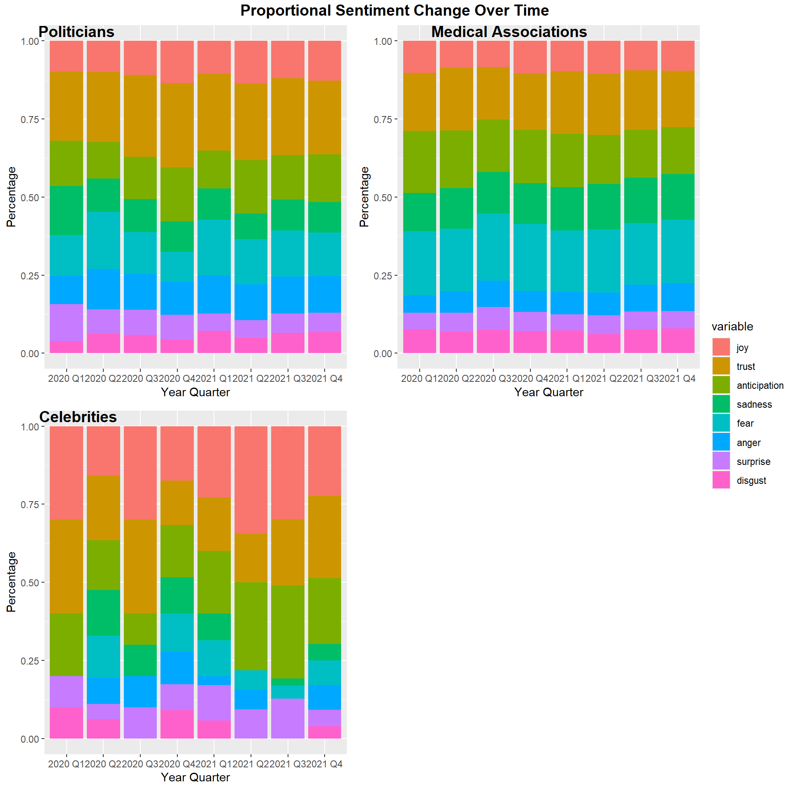
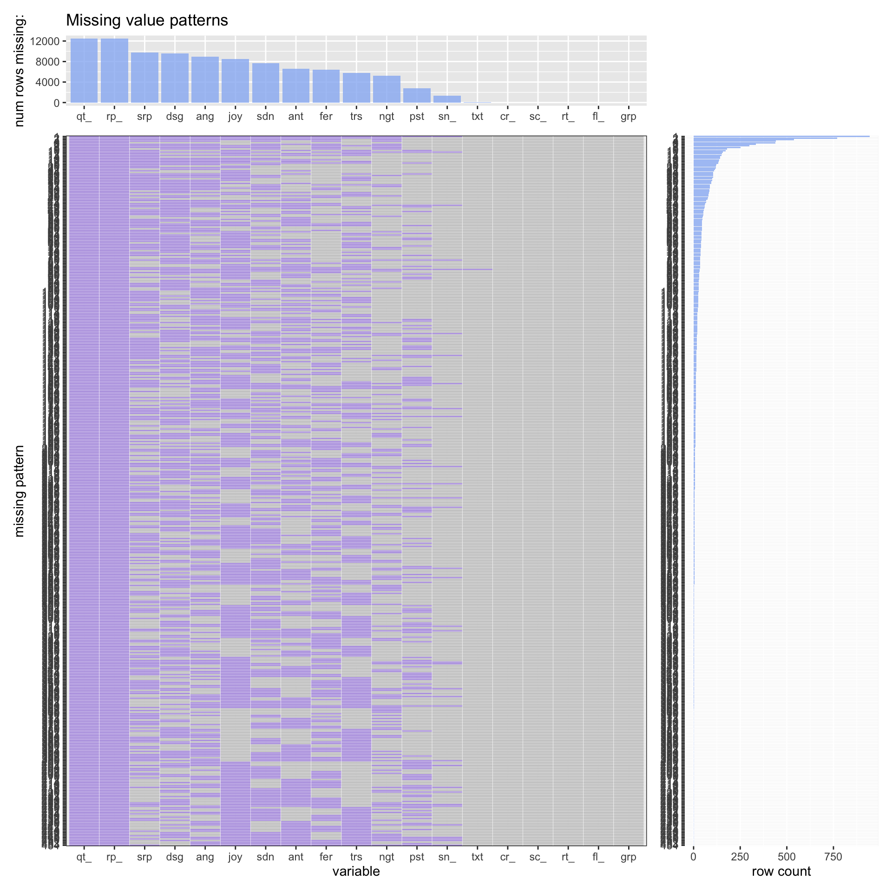
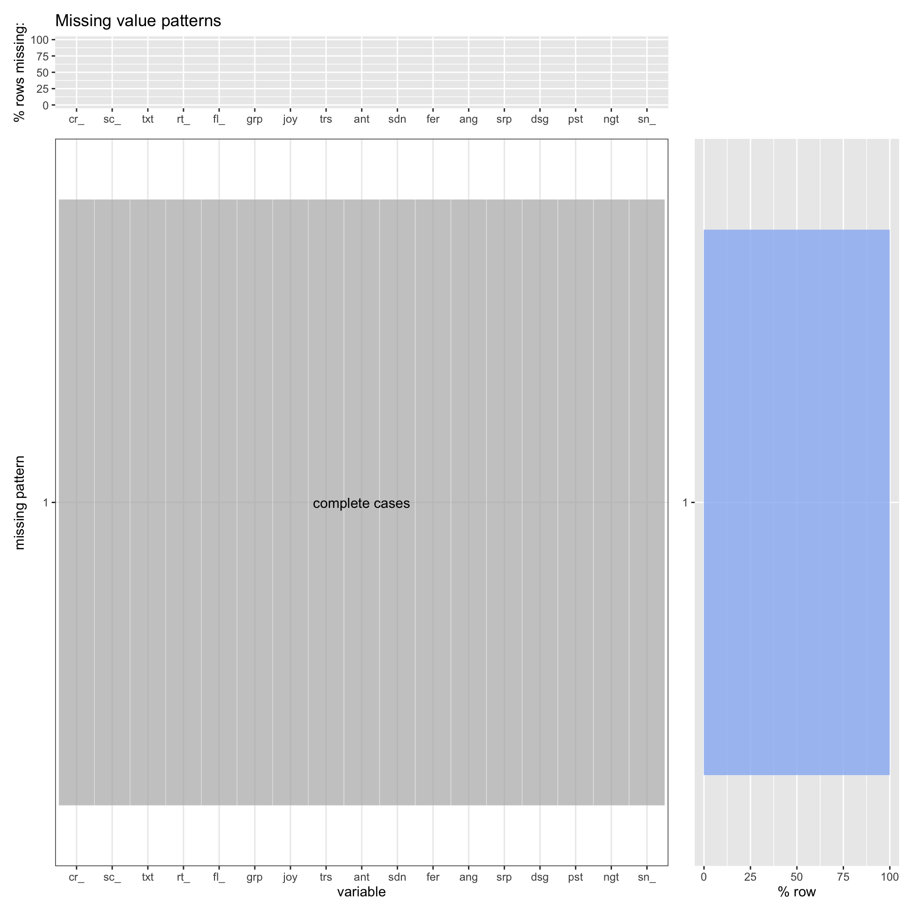
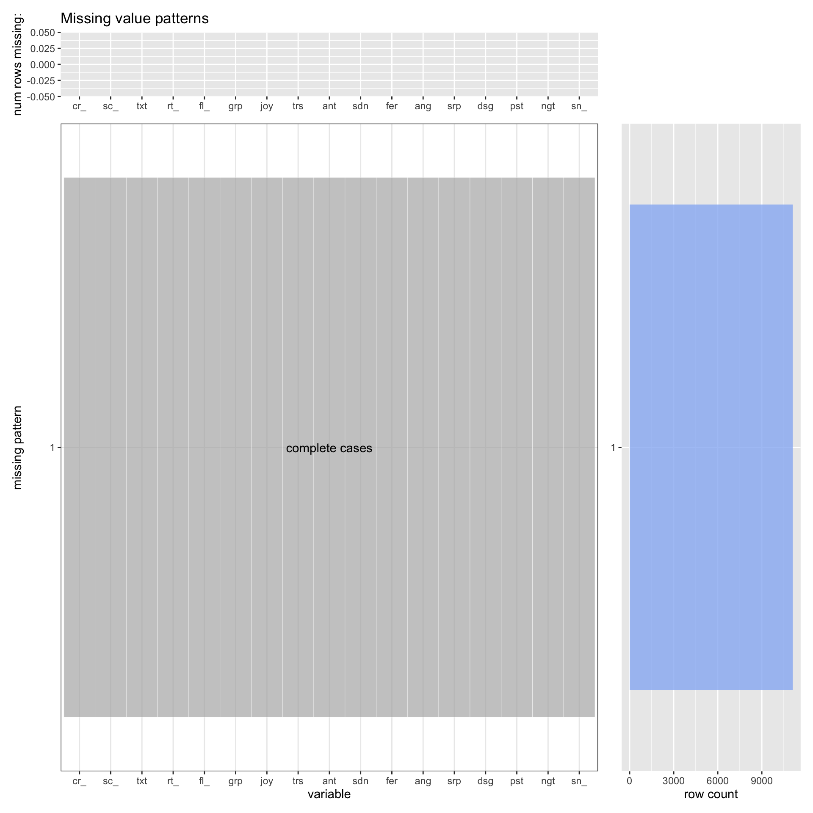

Chapter 4 Missing values
library(tidyverse)
library(patchwork)
library(ggnewscale)
library(rtweet)
library(sjmisc)
library(readr)Here is the missing value plot function we defined in Problem Set 4.
plot_missing <- function(data, percent) {
colnames(data) <- abbreviate(colnames(data), minlength = 3)
mp <- data.frame(is.na(data)) %>%
group_by_all() %>%
count(name = "count", sort = TRUE) %>%
ungroup()
missing_patterns <- mp %>% select(c(1:ncol(mp)-1))
sorted_num_missing <- sort(colSums(is.na(data)), decreasing = TRUE, index.return=TRUE)
level <- colnames(missing_patterns[sorted_num_missing$ix])
mid <- level[ceiling(length(level)/2)] # get name of var located at the center of graph to put "complete case"
tidy_missing_patterns <-
missing_patterns %>%
add_column(complete = if_else(rowSums(missing_patterns)==0, TRUE, FALSE)) %>%
rownames_to_column("id") %>%
gather(key, value, c(-id,-complete))
df <- sorted_num_missing$x
top_count <- data.frame(
name=names(df) ,
value=df)
top_percent <- data.frame(
name=names(df) ,
value=df*100/nrow(data))
cmp <- missing_patterns %>%
add_column(complete = if_else(rowSums(missing_patterns)==0, TRUE, FALSE))
side_count <- data.frame(
name=as.factor(seq.int(1:nrow(missing_patterns))),
value=mp$count,
complete=cmp$complete
)
side_percent <- data.frame(
name=as.factor(seq.int(1:nrow(missing_patterns))),
value=mp$count*100/nrow(data),
complete=cmp$complete
)
if (percent) {
p1 <- ggplot(top_percent, aes(x=fct_relevel(name, level), y=value)) +
geom_bar(stat = "identity", alpha=0.8, fill="#97b7f3") +
ylim(0, 100) +
ylab("% rows missing:") +
theme(axis.title.x=element_blank()) +
ggtitle("Missing value patterns")
p2 <-ggplot(side_percent, aes(x=fct_rev(name), y=value, fill=complete)) +
geom_bar(stat = "identity", alpha=0.8) +
scale_fill_manual(values = c("#97b7f3", "#6396ec")) +
coord_flip() +
ylab("% row") +
ylim(0, 100) +
theme(axis.title.y=element_blank()) +
theme(legend.position = "none")
} else {
p1 <- ggplot(top_count, aes(x=fct_relevel(name, level), y=value)) +
geom_bar(stat = "identity", alpha=0.8, fill="#97b7f3") +
ylab("num rows missing:") +
theme(axis.title.x=element_blank()) +
ggtitle("Missing value patterns")
p2 <- ggplot(side_count, aes(x=fct_rev(name), y=value, fill=complete)) +
geom_bar(stat = "identity", alpha=0.8) +
scale_fill_manual(values = c("#97b7f3", "#6396ec")) +
coord_flip() +
ylab("row count") +
theme(axis.title.y=element_blank()) +
theme(legend.position = "none")
}
tidy_missing_patterns$id <- as.factor(as.integer(tidy_missing_patterns$id))
p3 <-ggplot(tidy_missing_patterns, aes(x = fct_relevel(key, level), y = fct_rev(id), fill = value)) +
geom_tile(color = "white", aes(alpha=complete)) +
geom_text(aes(label = ifelse(complete == TRUE & key==mid, "complete cases", ""))) +
scale_fill_manual(values = c("#b3b3b3", "#9370da")) +
scale_alpha_manual(values = c(0.7, 1.0)) +
xlab("variable") +
ylab("missing pattern") +
theme_bw() +
theme(legend.position = "none")
p1 + plot_spacer() + p3 + p2 + plot_layout(widths = c(3,1), heights = unit(c(2,1), c('cm','null')))
}df_combined <- read_csv("./resources/data_combined_filtered_sentiment_old.csv")Then we checked how many missing values each column has.
df_combined %>% summarise_all(funs(sum(is.na(.))))## # A tibble: 1 × 19
## created_at screen_name text retweet_count quote_count reply_count
## <int> <int> <int> <int> <int> <int>
## 1 0 0 33 0 12451 12451
## # … with 13 more variables: followers_count <int>, group <int>, joy <int>,
## # trust <int>, anticipation <int>, sadness <int>, fear <int>, anger <int>,
## # surprise <int>, disgust <int>, positive <int>, negative <int>,
## # sentiment_score <int>plot_missing(df_combined, percent = TRUE)
plot_missing(df_combined, percent = FALSE)
It is hard to draw any significant conclusion from columns that have more than 90% of entries with missing values. Thus, we decided to remove all columns that have NA in more than 90% of entries. As a matter of fact, “quote_count” and “reply_count” columns have 100% of the entries with NA, so they will be removed from this filtering.
df <- df_combined %>% select(which(colMeans(is.na(.)) <= 0.9))Also, there are 33 rows that have NA for text, which is the tweet. We can’t perform any sentiment analysis on rows that have no tweet, so we are removing those 33 rows.
df <- df %>% drop_na(text)Also, we want to remove the rows that have NA for “positive” and “negative” sentiments. Having NA for those sentiments mean that the tweet doesn’t contain any information to calculate sentiment score, so we should remove those rows.
df <- df[!apply(is.na(df[,c("positive", "negative")]), 1, all),]In addition, for sentiment columns - joy, trust, anticipation, sadness, fear, anger, surprise, disgust, positive, negative - we want to replace NAs with 0s because NA in those columns means that the tweet didn’t contain any word that pertains to those sentiments. Having 0s in place of NAs will ensure that all the sentiment columns have valid number entries, 0 meaning no count.
df[c("joy", "trust", "anticipation", "sadness", "fear", "anger", "surprise", "disgust", "positive", "negative")][is.na(df[c("joy", "trust", "anticipation", "sadness", "fear", "anger", "surprise", "disgust", "positive", "negative")])] <- 0df %>% summarise_all(funs(sum(is.na(.))))## # A tibble: 1 × 17
## created_at screen_name text retweet_count followers_count group joy trust
## <int> <int> <int> <int> <int> <int> <int> <int>
## 1 0 0 0 0 0 0 0 0
## # … with 9 more variables: anticipation <int>, sadness <int>, fear <int>,
## # anger <int>, surprise <int>, disgust <int>, positive <int>, negative <int>,
## # sentiment_score <int>plot_missing(df, percent = TRUE)
plot_missing(df, percent = FALSE)
write_csv(df, "./resources/data_combined_filtered_sentiment.csv")